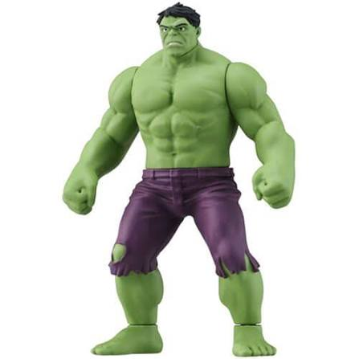

🧌 綠巨人 (Giant Boss) 3D 檢視器
依據
Giant.jpg
比例與特徵（憤怒表情、胸腹肌群、破損紫褲右膝破洞、雙拳與五趾大腳）建模，並整合 GDD 直向行軍規格。
GDD 3.2: 3.5x 巨型體型
GDD 4.1: Vx = 0 直線壓境
關節骨骼行走動畫
動作與行軍模式 (GDD 規格)
原地行走檢視
直線壓境 (Vx=0)
⏸ 暫停 / 播放行走
💢 憤怒咆哮姿勢
行走步伐速度 (Speed)
1.0x
步伐沉重擺幅 (Stride Intensity)
1.0x
快速檢視視角 (Camera Presets)
正面對照視角
側面步伐視角
背面背肌視角
遊戲俯視視角
輔助檢視與對比
🖼 原圖對照窗
🔵 1x 小兵比例尺
❤️ Boss 血條
🔄 慢速自轉展示
參考原圖 (Giant.jpg)
1:1 特徵還原

模式:
原地行走檢視
座標 X:
0.00
座標 Z:
0.00
橫向速度 Vx:
0.00 (零轉彎鎖定)